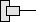

A list with all the available operator panels is displayed in the upper part of the Available Operator Panels ... window. One line corresponds to one operator panel and contains the following information:
Column | Description |
|---|---|
Consecutive number to identify the operator panel | |
Status | Status of the operator panel: : The operator panel is available on the bus. : The operator panel is not available on the bus. |
HW | Information on the hardware of the operator panel Possible values are unknown (no information available), NCU, PCU, PPU, TCU (all TCU including HT 8, etc.). Default value: Unknown |
Name | Name of the operator panel |
MCP | DIP switch position for the machine control panel The values can be freely selected from 1 to 254 (0 means that the last active machine control panel is retained, 255 means that a machine control panel is not being used). Default value: 192 |
DCK | Availability of direct control keys Active: The TCU has direct control keys Inactive: The TCU has no direct control keys |
TCU | Index for the TCU (Thin Client Unit) The value is freely configurable from 0 to 255 and is used for identification in the PLC. |
EKS | DIP switch position for the chip reader for access levels (Electronic Key System) Possible values range from 1 to 255. The value 0 means that an EKS is not used. |
Virtual keyboard | Use of a virtual keyboard Possible values are "Never", "Always" and "Auto", whereby "Auto" is set as default value. |
| Note |
The information of the operator panels is read-only and cannot be changed in the OPs window. |
Update of the overview
When switching to the OPs window, a search for available operator controls is performed automatically. This is also possible later via the "New display" or "Reload OP data" softkeys. The latter action results in a completely new scan during which already available operator controls are deleted from the local cache. New operator controls and data are sought during a reload.
The active DHCP server that contains the data for the operator panels can be a different NCU, but also the local NCU itself. Irrespective of this, a copy of the data is stored and used on the local NCU.
Procedure

| Note |
You can only use the "Distribute TCU data" softkey with a connection to the active DHCP server. |